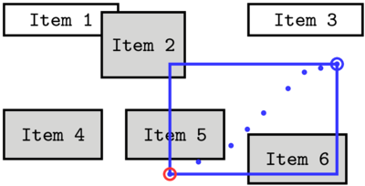

MultiselectJS Tutorial
Table of Contents
1 Introduction
MultiselectJS is a library for implementing multi-selection, i.e., the feature supporting selectitng and deselecting elements from a collection using the mouse (or another pointing device) or a keyboard. The visual aspects of selection, the shape and location of elements, their ordering, indicators of selection status, etc. vary from one application to another. These are the aspects that the client defines, MultiselectJS implements the rest.
1.1 Concepts
The multi-selection task is to idenfity a subset of a
collection of elements. To abstract over what these elements are (DOM
elements, characters in text, polygons drawn on a canvas, etc.), we
assume that each element is uniquely identified by some
index. Indices can be of any type that can be compared for equality
with ===, such as numbers, object references, or strings.
The selection state of elements is modeled as a function from indices
to booleans, where true indicates that an element is selected,
false that it is not. We call such a function a selection
mapping. User’s selection actions, such as clicking the mouse on an
element, dragging a ``rubber band’’ around elements, or pressing an
arrow key with the shift modifier key held down translate to one or
more selection operations that modify the selection mapping.
Each selection operation is associated with a selection domain that determines the set of indices that the operation affects, and a selection function that determines whether the indices will be selected, deselected, or toggled. The user indicates the selection domain through specifying a selection path, a sequence of points in some suitable coordinate space. This selection space could be, for example, the mouse locations in a window or pairs of row and column indices in a grid of elements. The first point of a selection path arises from a click or a command-click1, the subsequent points from shift-clicks (or mouse moves, when rubber band selecting). The first point is called the anchor and the last the active end of the path. In the case of a one-element path, the anchor and active end coincide. The selection domain specified by the current selection path is the active selection domain.
Figure 1 shows concrete instances of the above concepts. The selectable elements are rectangles of arbitrary size, they are placed in arbitrary locations, and they can overlap. We make the following observations:
- The selected elements are items 2, 4, 5, and 6, and hence the
selection mapping maps the indices 2, 4, 5, and 6 to
true, and all other indices tofalse. - The element 4 has been selected with a prior selection command. To select the elements 2, 5, and 6, the user has clicked the location marked with a red circle, and then dragged the mouse (rubber band selection) through several other locations (small blue dots). The last (or current) mouse location is marked with the blue circle.
- The selection space coincides with the space of mouse coordinates. The sequence of points indicated by the blue dots therefore constitute the selection path.
- In most selection contexts, the anchor and active end are the only points that matter in determining the selection domain. Here, the anchor and active end serve as the opposite cornerns of a rectangle—all elements that overlap with this rectangle (shown in blue) belong to the active selection domain.

Figure 1: A snapshot of a selection interaction. The selection path (the blue points) give rise to the selection domain consisting of the items 2, 5 and 6.
How the selection path determines the selection domain varies from one context to another. This variation is captured in the selection geometry. Concretely, a selection geometry in MultiselectJS is an object that defines the functions:
m2v(point)that converts mouse coordinates to selection space coordinates;selectionDomain(path, cmdType, J)that maps a selectionpathto a selection domain (thecmdTypeandJparameters are to enable optimizations, and they are explained later);extendPath(path, point)that defines how a new point is added to the selection path;filter(pred)that computes a selection domain as the set of indices that satisfy the predicatepred;step(direction, point)that defines how arrow keys should impact the current keyboard cursor location; anddefaultCursor(direction)that defines default cursor locations for when no operations have yet been performed.
The library has default definitions for each of the selection
geometry’s functions, and often it suffices to implement only a subset
of them. For example, in the selection geometry of Figure
1, the default definitions for m2v
(identity function) and extendPath (add point as the new anchor) can
be used. If the example does not support keyboard selection, step
and defaultCursor need not be defined. If it does not support
selection by a predicate, filter need not be defined. The only
function that must be defined is selectionDomain; it computes the
set of elements that overlaps with the rectangle indicated by two
points, the anchor and active end.
Figure 2: The selection path is the sequence 5, 2. The anchor is 5 and the active end 2. The selection domain is the set {2, 3, 4, 5}.
Figure 2 shows a snapshot from a
selection context that has a different selection geometry. In this
geometry, the selection space coincides with the set of element
indices: the m2v function maps all mouse positions that fall within
an element’s extents to the index of that element. In this context,
elements are considered to be ordered, so the selectionDomain
function maps a selection path to the range of indices between
(inclusive) the path’s anchor and active end. The anchor is marked
with a red dashed frame and the active end with blue. Here, the user
has clicked first somewhere on Item 5 and then shift-clicked
somewhere on Item 2. As a result, all elements between these two
items are marked selected.
Another aspect that varies from one selection context to another is if and how the anchor and the active end, and more generally the selection path, are visualized. MultiselectJS leaves these questions to the client, but makes the data needed for those visualizations readily available (see Section 3.7).
1.2 The meaning of click, command-click, and shift-click
Click, command-click, and shift-click are the basic selection tools that most applications support. Different applications assign slightly different meanings to these operations. The key bindings may vary as well (e.g., Windows’ ctrl-click corresponds to OS X’s command-click). These three commands are the basic building blocks of MultiselectJS, in terms of which most other (keyboard and rubber band selection) commands are defined. In a nutshell, the three selection commands work as follows:
- Click commits the current selection as an undoable state, deselects all selected elements, clears the selection path, establishes a new selection path that consists solely of the anchor, and sets the selection function to select. It then computes the selection domain that corresponds to the single-element selection path and selects the element(s) in the selection domain, which becomes the new active selection domain.
- Command-click commits the current selection as an undoable state, clears the selection path, and establishes a new selection path that consists solely of the anchor. If the anchor is on an already selected element, the selection function is set to deselect, otherwise to select. It then computes the selection domain that corresponds to the single element selection path and selects or deselects the element(s) in the selection domain, which becomes the new active selection domain.
- Shift-click extends the current selection path by a new point, and computes a selection domain that corresponds to this new selection path. This selection domain replaces the current active selection domain, so it cancels the effect of the previous one selection operation, and applies the same selection function to a new domain.
MultiselectJS does not insist on particular key bindings for any of the selection operations, but the naming of the functions in its public API reflects our recommendations.
2 Example: selecting from an ordered list of non-overlapping elements
The first example is a horizontal list of elements, in which elements can be selected using the click, command-click, and shift-click commands. The Show animals button displays a list of currently selected elements.
| pig | cow | goat | horse | sheep | chicken | duck | turkey | ostrich | mule |
The example and its complete source code can be viewed in separate windows.
2.1 Imports
To use MultiselectJS on a page is a matter of importing it as a script. There are no dependencies.
<script type="text/javascript" src="../../dist/multiselect.js"></script> <script type="text/javascript" src="https://ajax.googleapis.com/ajax/libs/jquery/2.1.3/jquery.min.js"></script>
2.2 Selectable elements
In this example, the selectable elements are HTML table cells. We
give the cells the selectable class attribute so that they are
easily accessible. The animal_list span is a placeholder for where
the selected animal names will be shown when the show_animals button
is clicked.
<table id="selectable_area"> <tr><td class="selectable">pig</td> <td class="selectable">cow</td> <td class="selectable">goat</td> <td class="selectable">horse</td> <td class="selectable">sheep</td> <td class="selectable">chicken</td> <td class="selectable">duck</td> <td class="selectable">turkey</td> <td class="selectable">ostrich</td> <td class="selectable">mule</td> </tr> </table> <br> <button id="show_animals">Show selected animals</button> <span id="animal_list"></span>
Next, we access the above HTML elements from JavaScript code:
var selectableArea = document.getElementById("selectable_area"); var selectables = selectableArea.getElementsByClassName("selectable");
The selectableArea object is the target of the mouse events.
The selectables objects is the collection of the selectable elements;
it is an “array-like” object, indexed with integers.
2.3 Visualizing the selection state
The following CSS code defines the visual appearance of selectable
elements in both their unselected and selected states.
The .selected class is turned on when an element is selected and off
when deselected.
<style> .selectable { outline:1px solid; padding:10px; cursor:default; } .selected { background-color: khaki; } </style>
To enable displaying the current selection state, MultiselectJS invokes a
callback function after every selection command (unless the library
recognizes that a command had no effect). The callback’s parameter,
s, is the current selection mapping. Here, the callback iterates
over all selectable elements and toggles the selected class
attribute according to each element’s selection status:
function refresh(s) { for(var i=0; i<selectables.length; ++i) { selectables[i].classList.toggle('selected', s(i)); }; }
The library can also be configured to track changes, in which case
the argument to the callback would be a Map2 of changed
elements. This mechanism is explained in Section
3.2.
2.4 Selection geometry
The OrderedGeometry class is the selection geometry for our example.
It stores a reference to the collection of the selectable elements.
var OrderedGeometry = function (elements) { this._elements = elements; } OrderedGeometry.prototype = Object.create(multiselect.DefaultGeometry.prototype);
OrderedGeometry inherits from DefaultGeometry to get the default
implementations of the selection geometry methods. The superclass’
constructor is not called since the base class has no
state. OrderedGeometry defines two methods: m2v and
selectionDomain.
The selection space coordinates are the indices of the selectable
elements, integers between 0 and this._elements.length - 1.
The m2v function finds the element on which the
mouse coordinate mp falls on and returns the element’s index.
OrderedGeometry.prototype.m2v = function(mp) { for (var i=0; i<this._elements.length; ++i) { if (pointInRectangle(mp, this._elements[i].getBoundingClientRect())) return i; } }
The helper function pointInRectangle checks whether a point is
inside a rectangle.
function pointInRectangle(mp, r) { return mp.x >= r.left && mp.x <= r.right && mp.y >= r.top && mp.y <= r.bottom; }
The selectionDomain function is simple—it constructs a new Map
object with makeEmptyMap, extracts the anchor and active end
from the selection path, and sets all indices between them to true:
OrderedGeometry.prototype.selectionDomain = function(path) { var J = multiselect.makeEmptyMap(); var a = multiselect.anchor(path); var b = multiselect.activeEnd(path); for (var i=Math.min(a, b); i<=Math.max(a, b); ++i) J.set(i, true); return J; }
2.5 Selection state object
The SelectionState class maintains all the state of the selection,
including the current selection mapping, selection path, and undo and
redo stacks. It defines methods for the various selection commands
(click, cmdClick, shiftClick etc.). The SelectionState
constructor’s parameters are a selection geometry, the refresh callback, a
boolean that turns change tracking on or off, and the maximum number
of undo states to remember. The last two can be omitted if their defaults
(false and 10, respectively) are suitable.
var geometry = new OrderedGeometry(selectables); var selection = new multiselect.SelectionState(geometry, refresh, false, 10);
2.6 Setting up mouse events
The event handler for the mouse down event recognizes clicks, command-clicks, and shift-clicks, and invokes the corresponding library functions. Detecting modifier keys is somewhat messy. We thus define constants that indicate shift, command, and option modifiers, and define a function to translate the browser and OS specific event data to one of these constants of our own:
const M_NONE = 1, M_SHIFT = 2, M_CMD = 3, M_SHIFT_CMD = 4, M_OPT = 5, M_SHIFT_OPT = 6; function modifierKeys (evt) { if (evt.shiftKey && isCmdKey(evt)) return M_SHIFT_CMD; if (isCmdKey(evt)) return M_CMD; if (evt.shiftKey && evt.altKey) return M_SHIFT_OPT; if (evt.altKey) return M_OPT; if (evt.shiftKey) return M_SHIFT; return M_NONE; function isCmdKey (evt) { return evt.metaKey || evt.ctrlKey; } }
The isCmdKey function defines what keys are interpreted as the
command modifier; we accept both control and command keys. This is
because in the context of multiselection the role of the command
modifier under Mac OS X is the same as that of the control modifier
under Windows and Linux. In a production application, one might want
to detect the platform and only accept one of the alternatives,
according to the platform convention. The option modifier (alt in
Windows) is also recognized, with and withouth shift. This modifier
is used in key bindings of undo and redo commands.
The handler for the mouse down event can now be defined and registered:
function mousedownHandler(evt) { evt.preventDefault(); evt.stopPropagation(); var vp = selection.geometry().m2v({ x: evt.clientX, y: evt.clientY }); switch (modifierKeys(evt)) { case M_NONE: selection.click(vp); break; case M_CMD: selection.cmdClick(vp); break; case M_SHIFT: selection.shiftClick(vp); break; } }; selectableArea.addEventListener('mousedown', mousedownHandler, false);
How selection events are recognized may have to take into account
other mouse events, in particular those for dragging to copy or move
already selected elements. This example ignores such concerns.
Regardless of the precise way of recognizing mouse events, we draw
attention to the simplicity of invoking MultiselectJS’s services: the
selection geometry’s m2v function transforms the mouse position into
a selection space coordinate, which is passed to either the click,
cmdClick, or shiftClick method.
2.7 Accessing selected elements
The first example is complete, except for handling the click event of
the ``Show selected animals’’, which displays a list of the
selected elements. The selection.selected() call returns the selected
elements as a Set.
function showAnimals() { var s = ""; selection.selected().forEach(function(v) { s = s + selectables[v].textContent + " "; }); document.getElementById("animal_list").textContent = s; } document.getElementById("show_animals").addEventListener("click", showAnimals);
Another means to inspect the current selection state, not used here,
is the isSelected(i) method that returns the selection state of
element i.
3 Example: selection geometry that is both row-wise ordered and rectangular
This section introduces another selection context, with quite a bit more complex selection geometry. The elements are ordered row-wise, and the user can select a range of elements in this order with an anchor and active end. Alternatively, the anchor and active end can be interpreted as corners of a rectangle, giving the user the means to select all elements within a rectangular area. This kind of a dual selection mechanism is offered, for example, in Apple’s iPhoto application.
This section also shows how to build support for rubber band selection and selecting with keyboard, undo and redo operations, and how to visualize the anchor, the active end, and the rubber band. Again, the example can be opened in a separate window, and the complete source code viewed in one piece.
To become familiar with the supported selection features, try clicking, command-clicking, and shift clicking the elements, as well as dragging the mouse to perform rubber band selection. Try starting a rubber band selection both on an element and between elements and notice how in the former case elements within a range and in the latter within a rectangular area are selected. Try starting a rubber band deselection with a command-click on a selected element. Try releasing the mouse in a rubber band selection, and then picking it up again with shift-click. Experiment with keyboard selection, using the space and arrow keys with and withouth shift and command modifiers. Finally, use the undo and redo operations, bound to option-Z and shift-option-Z keys, respectively.
3.1 Selectable elements
The selectable area is a div. The tabIndex attribute is defined so that
the element can acquire the keyboard focus.
<div id="selectable_area2" tabIndex="0"></div>
JavaScript code generates the selectable elements:
var selectableArea2 = document.getElementById("selectable_area2"); for (var i = 0; i<400; ++i) { var e = document.createElement("span"); e.setAttribute("class", "selectable2"); e.textContent = i; selectableArea2.appendChild(e); } var selectables2 = selectableArea2.getElementsByClassName("selectable2");
In this example, selectable2 class indicates a selectable element, and selected2 class
is added when the element is selected. The style definitions are as follows:
<style> #selectable_area2 { border:1px solid black; cursor:default; } .selectable2 { outline:1px solid; padding:1px 4px 1px 4px; margin:2px; display:inline-block; } .selected2 { background-color: khaki; } </style>
3.2 Refreshing
As discussed above, every method of the SelectionState class that
may change the selection state invokes the refresh callback. This
example uses tracking of changes so that the refresh callback
function only needs to iterate over the changed elements instead of
all selectable elements. We use a refresh function that toggles a class
in further examples as well, and thus write a factory function
that can generate a refresh-callback for any set of DOM elements.
function mkRefresh (elements, cls) { return (function (changed) { changed.forEach(function (value, i) { $(elements[i]).toggleClass(cls, value); }); }); }
The refresh function for this current example is:
var refresh2 = mkRefresh(selectables2, 'selected2');
With tracking of changes on, the argument to the refresh callback is a
Map object. Its keys are the indices of the elements that were
changed, and its values either true or false, indicating the
current selection state.
3.3 Selection geometry
The selection geometry again stores a reference to the collection of
the selectable elements. It also stores a reference to a DOM object
surrounding the selectable elements. This parent object is used
in definining mouse coordinates that are invariant to the location of
the parent object on the page.
var RowwiseGeometry = function (parent, elements) { this._parent = parent; this._elements = elements; } RowwiseGeometry.prototype = Object.create(multiselect.DefaultGeometry.prototype);
Coordinates in the selection space can indicate either an element
index or a point ``in-between’’. We choose to represent a coordinate
as an object that has two members, index an point. The in-between
coordinate values are recognized by index that has value null.
The point member is a mouse coordinate.
The m2v method constructs a coordinate object:
RowwiseGeometry.prototype.m2v = function(mp) { for (var i=0; i<this._elements.length; ++i) { var r = getOffsetRectangle(this._parent, this._elements[i]); if (pointInRectangle(mp, r)) return { index: i, point: mp }; } return { index: null, point: mp }; }
The getOffsetRectangle(a, b) returns the bounding box of b in
coordinates relative to the top-left corner of the bounding box of a:
function topLeftCorner(r) { return { x: r.left, y: r.top }; } function offsetRectangle(p, r) { return { left: r.left - p.x, top: r.top - p.y, right: r.right - p.x, bottom: r.bottom - p.y }; } function getOffsetRectangle(parent, elem) { return offsetRectangle(topLeftCorner(parent.getBoundingClientRect()), elem.getBoundingClientRect()); }
As mentioned above, the user can select a range or a rectangular area
of elements. Which mechanism is used depends on from where a selection
command starts: if the anchor is on an element, row-wise selection is
used, if not, rectangular selection is used. The selectionDomain
function thus first inspects the anchor’s index to determine the
kind of coordinate the anchor is, and then either interprets the
anchor and the active end as the endpoints of a range or as the
corners of a rectangle:
RowwiseGeometry.prototype.selectionDomain = function(path) { var J = multiselect.makeEmptyMap(); var a = multiselect.anchor(path); var b = multiselect.activeEnd(path); if (a.index !== null) { for (var i=Math.min(a.index, b.index); i<=Math.max(a.index, b.index); ++i) J.set(i, true); } else { var r1 = { left: Math.min(a.point.x, b.point.x), right: Math.max(a.point.x, b.point.x), top: Math.min(a.point.y, b.point.y), bottom: Math.max(a.point.y, b.point.y) }; for (var i = 0; i < this._elements.length; ++i) { var r2 = getOffsetRectangle(this._parent, this._elements[i]); if (rectangleIntersect(r1, r2)) J.set(i, true); } } return J; }
The rectangeIntersect helper function is as follows:
function rectangleIntersect(r1, r2) { return r1.left <= r2.right && r1.right >= r2.left && r1.top <= r2.bottom && r1.bottom >= r2.top; }
This selection geometry overrides the extendPath(path, p) method. The
click, cmdClick, and shiftClick methods call extendPath to add
a selection space point to the current selection path. Prior to
pushing the new point to path array, this extendPath
implementation performs two tasks. First, only the first and last
point of the selection path (anchor and active end) are of importance
in this geometry. Therefore, if the path already
has two elements, the previous active end is discarded.3
Second, if the anchor is on an element, we insist
that the active end is also on an element: trying to extend the path
with an in-between point has no effect in this case.
RowwiseGeometry.prototype.extendPath = function(path, p) { if (path.length > 0 && multiselect.anchor(path).index !== null && p.index === null) return null; if (path.length == 2) path.pop(); path.push(p); }
The library expects that extendPath returns null if
the selection path is not changed.
3.4 Selection state object
The SelectionState object is created as before, but this time
tracking is set to true.
var geometry2 = new RowwiseGeometry(selectableArea2, selectables2); var selection2 = new multiselect.SelectionState(geometry2, refresh2, true);
3.5 Mouse events
Setting up mouse events for the current example is a bit more involved
because rubber band selection requires handlers for mousemove and
mouseup events. Further, the event handlers make calls to a function
that visualizes the anchor and active end.
The interplay of handlers of different mouse events can be defined in
many ways, so the code below should be considered as one possible
arrangement. The handler for the mousedown event in the selectable
area (parent) is registered at all times. As its first task, it
registers handlers for mousemove and mouseup events. These are set
for the entire document, as the mouse can wander outside of the
selectable area. The handler for the mouseup event removes itself
and the mousemove handler.
function setupMouseEvents (parent, canvas, selection) { function mousedownHandler(evt) { var mousePos = selection.geometry().m2v(offsetMousePos(parent, evt)); switch (modifierKeys(evt)) { case M_NONE: selection.click(mousePos); break; case M_CMD: selection.cmdClick(mousePos); break; case M_SHIFT: selection.shiftClick(mousePos); break; default: return; } selection.geometry().drawIndicators(selection, canvas, true, true, false); document.addEventListener('mousemove', mousemoveHandler, false); document.addEventListener('mouseup', mouseupHandler, false); evt.preventDefault(); evt.stopPropagation(); }; function mousemoveHandler (evt) { evt.preventDefault(); evt.stopPropagation(); var mousePos = selection.geometry().m2v(offsetMousePos(parent, evt)); selection.shiftClick(mousePos); selection.geometry().drawIndicators(selection, canvas, true, true, true); }; function mouseupHandler (evt) { document.removeEventListener('mousemove', mousemoveHandler, false); document.removeEventListener('mouseup', mouseupHandler, false); selection.geometry().drawIndicators(selection, canvas, true, true, false); }; parent.addEventListener('mousedown', mousedownHandler, false); }
There are three further noteworthy issues in the code above.
- A mouse move during rubber band selection is semantically
equivalent to a shift-click. The
mousemoveHandlerthus acquires a selection space coordinate and passes it to theshiftClickmethod. - The calls to
drawIndicatorsfunction are what display the anchor, the active end, and the rubber band indicators. These markers are drawn on a HTML5 canvas element that overlaps the selectable area. The three boolean arguments specify which of the three indicators (in the order anchor, active end, rubber band) should be shown;truemeans to show,falseto hide. In this example we makedrawIndicatorsa method of the geometry object. This because we reuse thesetupMouseEventsfunction in a later example that uses a different selection geometry. A different geometry means a different visualization, so it is convenient to couple the visualization to the geometry. - Even though the mouse events are inevitably a bit more complex, the MultiselectJS selection services are obtained by the same simple calls to the three different click methods.
We remark that a common feature in multi-selection contexts is drag-and-drop of selected elements. The above event handlers do not recognize the start of a drag-and-drop event.
A few tasks remain. First, the mouse setup code uses a helper function
offsetMousePos to translates an event’s mouse coordinates to
coordinates relative to another DOM element (parent). Its implementation
is as follows:
function offsetMousePos(parent, evt) { var p = topLeftCorner(parent.getClientRects()[0]); return { x: evt.clientX - p.x, y: evt.clientY - p.y }; }
Second, the event handlers must be activated:
var canvas2 = createCanvas(selectableArea2); setupMouseEvents(selectableArea2, canvas2, selection2);
Section 3.7 shows the implementations of the
createCanvas and drawIndicators functions.
3.6 Keyboard events
Various keyboard commands can accomplish the same selection tasks as
clicks—the selection space point associated with a keyboard command
is the value of the keyboard cursor. The keyboard cursor is often
the same as the active end; a click, command-click, and shift-click
set the cursor to and the active end to the clicked point. The cursor
can, however, deviate from the active end. For example, the arrow
keys, unmodified, move the keyboard cursor but do not change the
selection path. Further, the keyboard cursor can be defined even if
the selection path is empty, e.g., after an undo command.
Selection geometry’s step(dir, point) method determines how arrow
keys move the keyboard cursor. The dir parameter is one of constants
UP, DOWN, LEFT, RIGHT. In this example, step only moves the
cursor if it is on an element. When moving to a new element, the
point member of the cursor object is set to the center point of the
moved-to element.
RowwiseGeometry.prototype.step = function (dir, p) { if (p.index === null) return p; var ind = null; switch (dir) { case multiselect.LEFT: ind = Math.max(p.index - 1, 0); break; case multiselect.RIGHT: ind = Math.min(p.index + 1, this._elements.length-1); break; case multiselect.UP: ind = findClosestP.call(this, this._parent, this._elements, p.index, isAbove); break; case multiselect.DOWN: ind = findClosestP.call(this, this._parent, this._elements, p.index, function (a, b) { return isAbove(b, a); }); break; default: return p; } return { index: ind, point: centerPoint(getOffsetRectangle(this._parent, this._elements[ind])) }; }
Moving left and right is simple: decrement or increment the cursor’s
index. Moving up or down is more complex. There are several sensible
choices for what next element above or next element
below mean, even for what above and below mean.
We consider one element above the other if the former’s
center point is above the top edge of the latter. The next element
above of some element i is the closest, in distance between center
points, of all elements that are above i. Next below is defined
analogously. The findClosestP(parent, elements, i, pred) helper function
performs these determinations, finding the closest element to i
that satisfies pred:
function centerPoint (r) { return { x: (r.left + r.right)/2, y: (r.top + r.bottom)/2 }; } function distance (p1, p2) { var dx = p1.x - p2.x; var dy = p1.y - p2.y; return Math.sqrt(dx * dx + dy * dy); } function isAbove(r1, r2) { return centerPoint(r2).y < r1.top; } function findClosestP(parent, elements, j, pred) { var r = getOffsetRectangle(parent, elements[j]); var candidateIndex = null; var candidateDistance = Number.MAX_VALUE; for (var i=0; i<elements.length; ++i) { var rc = getOffsetRectangle(parent, elements[i]); if (pred(r, rc) && distance(centerPoint(r), centerPoint(rc)) < candidateDistance) { candidateIndex = i; candidateDistance = distance(centerPoint(r), centerPoint(rc)); } } if (candidateIndex === null) return j; else return candidateIndex; }
With the step function defined, setting up the keyboard events is
straightforward: the event handler for keydown recognizes the key
combination of a command, invokes the desired SelectionState’s
method, and calls a function to draws the indicators. We bind the
handler to parent, the DOM element that is the selectable area, to
avoid conflicts; the bindings are only in effect when parent has
focus. The mousedown handler is defined to give parent focus when
it is clicked.
function setupKeyboardEvents(parent, canvas, selection) { parent.addEventListener('keydown', keydownHandler, false); parent.addEventListener('mousedown', function() { parent.focus(); }, false); function keydownHandler(evt) { var handled = false; var mk = modifierKeys(evt); switch (evt.which) { case 37: handled = callArrow(mk, multiselect.LEFT); break; case 38: handled = callArrow(mk, multiselect.UP); break; case 39: handled = callArrow(mk, multiselect.RIGHT); break; case 40: handled = callArrow(mk, multiselect.DOWN); break; case 32: handled = callSpace(mk); break; case 90: handled = callUndoRedo(mk); break; default: return; // exit this handler for unrecognized keys } if (!handled) return; // event is recognized selection.geometry().drawIndicators(selection, canvas, true, true, false); evt.preventDefault(); evt.stopPropagation(); } function callUndoRedo (mk) { switch (mk) { case M_OPT: selection.undo(); break; case M_SHIFT_OPT: selection.redo(); break; default: return false; } return true; } function callArrow (mk, dir) { switch (mk) { case M_NONE: selection.arrow(dir); break; case M_CMD: selection.cmdArrow(dir); break; case M_SHIFT: selection.shiftArrow(dir); break; default: return false; } return true; } function callSpace (mk) { switch (mk) { case M_NONE: selection.space(); break; case M_CMD: selection.cmdSpace(); break; case M_SHIFT: selection.shiftSpace(); break; default: return false; } return true; } }
The main switch statement recognizes the arrow
keys, space, and the character z (for undo and redo), and delegates
to different helper functions. The helper functions inspect the
modifers and dispatch to the appropriate SelectionState method,
or return false if the key binding is not recognized.
A call to setupKeyboardEvents registers the keyboard event handler:
setupKeyboardEvents(selectableArea2, canvas2, selection2);
To complete the keyboard selection functionality, we override the
defaultCursor method so that keyboard cursor has sensible defaults
when nothing has yet been selected: the right and down arrow keys
start from the first element, the left and up arrow keys from the last.
RowwiseGeometry.prototype.defaultCursor = function (dir) { var ind; switch (dir) { case multiselect.RIGHT: case multiselect.DOWN: ind = 0; break; case multiselect.LEFT: case multiselect.UP: ind = this._elements.length - 1; break; default: return undefined; } return { index: ind, point: centerPoint(getOffsetRectangle(this._parent, this._elements[ind])) }; }
3.7 Visualizing anchor, cursor, and rubberband
Sometimes it is useful to show where the anchor and keyboard cursor
reside. Many expect to see a rectangular rubber band when selecting
via dragging. In “lasso” selection, it is particularly important to
have a visual indicator of the selected area. Displaying these
indicators can be implemented without help from MultiselectJS but to ease
the task, SelectionState has methods selectionPath and cursor
for querying the current selection path and cursor, respectively. The
former returns an array of points and the latter a single point. These
points are selection space coordinates and thus something akin to an
inverse of the m2v transformation is necessary prior to their use in
visualization. The desired visualization, however, is likely not a
single point, but insted perhaps a frame over the selected
element. Since the details of the “inverse” transformation varies from
one selection context to another, its definition is left completely to
the client.
In this example the visual indicators are drawn on a canvas placed on
top of the selectable area. To maintain the overlap, the canvas’ size
and position are recalculated whenever the window object is resized.
function createCanvas (parent) { var canvas = document.createElement("canvas"); canvas.style.position = 'absolute'; parent.insertBefore(canvas, parent.firstChild); $(window).resize(resizeCanvas); resizeCanvas(); return canvas; function resizeCanvas() { var rect = parent.getBoundingClientRect(); canvas.width = rect.right - rect.left; canvas.height = rect.bottom - rect.top; } }
The drawIndicators function is defined as a method of the
geometry2 object. The function first clears all indicators, then
draws some or all of anchor, cursor, and rubber band based on the
drawAnchor, drawCursor, and drawRubber flags. The tests for
undefined points are to safeguard for the case where there is no
anchor (the selection path is empty) or no cursor.
Anchor is drawn as a circle for in-between points (points whose
index is null) and as a rectangle for points on an element.
Cursor is not drawn at all for in-between points.
geometry2.drawIndicators = function (selection, canvas, drawAnchor, drawCursor, drawRubber) { var ctx = canvas.getContext('2d'); ctx.clearRect(0, 0, canvas.width, canvas.height); if (drawAnchor) { ctx.strokeStyle = 'DarkRed'; var p = multiselect.anchor(selection.selectionPath()); if (p !== undefined) { if (p.index === null) { // in-between point, draw a circle ctx.beginPath(); ctx.arc(p.point.x, p.point.y, 4, 0, Math.PI*2, true); ctx.stroke(); } else { // point on an element, draw a frame var r = getOffsetRectangle(canvas, selection.geometry()._elements[p.index]); ctx.strokeRect(r.left, r.top, r.right-r.left, r.bottom-r.top); } } } if (drawCursor) { ctx.strokeStyle = 'blue'; var p = selection.cursor(); if (p !== undefined && p.index !== null) { var r = getOffsetRectangle(canvas, selection.geometry()._elements[p.index]); ctx.strokeRect(r.left, r.top, r.right-r.left, r.bottom-r.top); } } if (drawRubber) { ctx.strokeStyle = 'green'; var p1 = multiselect.anchor(selection.selectionPath()); if (p1 !== undefined && p1.index === null) { var p2 = multiselect.activeEnd(selection.selectionPath()); ctx.strokeRect(Math.min(p1.point.x, p2.point.x), Math.min(p1.point.y, p2.point.y), Math.abs(p1.point.x-p2.point.x), Math.abs(p1.point.y-p2.point.y)); } } }
The second example is complete.
4 Example: snake selection geometry
The third example demonstrates a selection geometry where all points of the selection path are relevant: the selection domain consists of all the elements that the selection path touches. Instead of numbers, the selectable elements in this example are fish. Please experiment with the following selection context to understand how this ``snake’’ selection works.4
<div id="selectable_area3" tabIndex="0"></div> <br> Filter: <input type="text" id="filter3"></input> <button id="commit_filter3">Commit</button>
The selectable elements are again generated by JavaScript under a div on the page.
The code that populates the fish array is in fish.js.
var selectableArea3 = $("#selectable_area3")[0]; for (var i = 0; i<fish.length; ++i) { $(selectableArea3).append("<span class='selectable2'>" + fish[i] + "</span> "); } var selectables3 = $(".selectable2", selectableArea3); var filter3 = $("#filter3")[0]; $(filter3).keyup(function () { var str = $(filter3).val(); selection3.filter(function(i){ return str !== "" && fish[i].indexOf(str)>-1; }); }); $("#commit_filter3").click(function(){ selection3.commit(); }); selectableArea3.addEventListener('keydown', keydownHandler3, false); var geometry2 = new RowwiseGeometry(selectableArea3, selectables3); function keydownHandler3(evt) { var draw = true; switch (evt.which) { case 66: var s = selection3.selectionPath(); s.pop(); selection3.setPath(s); break; case 70: var s = selection3.selectionPath(); s.shift(); selection3.setPath(s); break; case 82: selection3.setGeometry(geometry2); draw = false; break; case 83: selection3.setGeometry(geometry3); draw = false; break; default: return; } selection3.geometry().drawIndicators(selection3, canvas3, draw, draw, draw); }
The styles selectable2 and selected2 are reused,
so we only style the selectable area:
<style> #selectable_area3 { border:1px solid black; cursor:default; } </style>
Filter:
Most of the “snake” geometry is straightforward.
var SnakeGeometry = function (parent, elements) { this._parent = parent; this._elements = elements; this._k = 0; } SnakeGeometry.prototype = Object.create(multiselect.DefaultGeometry.prototype); SnakeGeometry.prototype.extendPath = function(path, p) { path.push(p); }
The extendPath method simply adds new element to the path.
Selection space coordinates are the same as the mouse coordinates,
and hence m2v need not be defined.
Computing the selection domain, however, requires a bit more effort.
The function iterates over all line segments defined by two adjacent points
in the selection path. For each line segment, it finds the elements that
the line segment intersects with, and adds them to the selection
domain. This is quite a bit of work, and thus the selectionDomain
function implements an optimization. When it is finished
computing a selection domain, it stores the last index of the selection
path in this._k. If selectionDomain is
called from shiftClick (this is how it is called when rubber band
selection is going on), the call includes the previously calculated
selection domain (J) as the third parameter.
It then suffices to iterate the line segments in the path from index _k
onwards.
SnakeGeometry.prototype.selectionDomain = function(path, source, J) { if (J === undefined) J = multiselect.makeEmptyMap(); switch (source) { case multiselect.C_SHIFT_CLICK: break; case multiselect.C_SET_PATH: case undefined: this._k = 0; } var prev = this._k; for (var i = this._k; i < path.length; ++i) { for (var j = 0; j < this._elements.length; ++j) { if (lineRectIntersect(path[i], path[prev], getOffsetRectangle(this._parent, this._elements[j]))) J.set(j, true); } prev = i; } this._k = path.length - 1; return J; }
A few more substantial helper functions are needed.
The lineRectIntersect function determines if a line intersects with a rectangle,
mkRectangle constructs a rectangle from two points:
function lineRectIntersect(p1, p2, r) { if (!rectangleIntersect(mkRectangle(p1, p2), r)) return false; // if bounding boxes do not overlap, cannot intersect if (pointEquals(p1, p2)) return pointInRectangle(p1, r); var p = {}; if (lineIntersect(p1, p2, { x: r.left, y: r.top }, { x: r.left, y: r.bottom }, p) === 1) return true; if (lineIntersect(p1, p2, { x: r.left, y: r.top }, { x: r.right, y: r.top }, p) === 1) return true; if (lineIntersect(p1, p2, { x: r.right, y: r.bottom }, { x: r.right, y: r.top }, p) === 1) return true; if (lineIntersect(p1, p2, { x: r.right, y: r.bottom }, { x: r.left, y: r.bottom }, p) === 1) return true; return pointInRectangle(p1, r) || pointInRectangle(p2, r); } function mkRectangle(p1, p2) { return { left: Math.min(p1.x, p2.x), top: Math.min(p1.y, p2.y), right: Math.max(p1.x, p2.x), bottom: Math.max(p1.y, p2.y) }; } function pointEquals(p1, p2) { return p1.x === p2.x && p1.y === p2.y; }
The lineIntersect function is more involved.
The code is a bit long, so we show it at the very end of this document in Section 4.3.
Constructing the selection state is familiar:
var geometry3 = new SnakeGeometry(selectableArea3, selectables3); var selection3 = new multiselect.SelectionState(geometry3, mkRefresh(selectables3, 'selected2'), true);
4.1 Draw indicators
geometry3.drawIndicators = function (selection, canvas, drawAnchor, drawCursor, drawRubber) { var ctx = canvas.getContext('2d'); ctx.clearRect(0, 0, canvas.width, canvas.height); if (drawAnchor) { ctx.strokeStyle = 'DarkRed'; var p = multiselect.anchor(selection.selectionPath()); if (p !== undefined) { ctx.beginPath(); ctx.arc(p.x, p.y, 4, 0, Math.PI*2, true); ctx.stroke(); } } if (drawCursor) { ctx.strokeStyle = 'blue'; var p = selection.cursor(); if (p !== undefined) { ctx.beginPath(); ctx.arc(p.x, p.y, 4, 0, Math.PI*2, true); ctx.stroke(); } } if (drawRubber) { ctx.strokeStyle = 'green'; var path = selection.selectionPath(); if (path.length > 0) { ctx.moveTo(path[0].x, path[0].y); for (var i = 1; i < path.length; ++i) ctx.lineTo(path[i].x, path[i].y); ctx.stroke(); } } }
4.2 Setting up mouse events
The setup code from the previous example does what we want:
var canvas3 = createCanvas(selectableArea3); setupMouseEvents(selectableArea3, canvas3, selection3); setupKeyboardEvents(selectableArea3, canvas3, selection3);
4.3 Line intersection code
This function is adapted from Prasad Mukesh’s C-code Intersection of Line Segments,
ACM Transaction of Graphics’ Graphics Gems II, p. 7–9, code: p. 473–476, xlines.c.
/* PORTED FROM: * lines_intersect: AUTHOR: Mukesh Prasad * * This function computes whether two line segments, * respectively joining the input points (x1,y1) -- (x2,y2) * and the input points (x3,y3) -- (x4,y4) intersect. * If the lines intersect, the output variables x, y are * set to coordinates of the point of intersection. * * All values are in integers. The returned value is rounded * to the nearest integer point. * * If non-integral grid points are relevant, the function * can easily be transformed by substituting floating point * calculations instead of integer calculations. * * Entry * x1, y1, x2, y2 Coordinates of endpoints of one segment. * x3, y3, x4, y4 Coordinates of endpoints of other segment. * * Exit * x, y Coordinates of intersection point. * * The value returned by the function is one of: * * DONT_INTERSECT 0 * DO_INTERSECT 1 * COLLINEAR 2 * * Error conditions: * * Depending upon the possible ranges, and particularly on 16-bit * computers, care should be taken to protect from overflow. * * In the following code, 'long' values have been used for this * purpose, instead of 'int'. * */ function sameSigns(a, b) { return a >= 0 && b >= 0 || a < 0 && b < 0; } function lineIntersect( p1, /* First line segment */ p2, p3, /* Second line segment */ p4, p5 /* Output value: * point of intersection */ ) { const DONT_INTERSECT = 0; const DO_INTERSECT = 1; const COLLINEAR = 2; var a1, a2, b1, b2, c1, c2; /* Coefficients of line eqns. */ var r1, r2, r3, r4; /* 'Sign' values */ var denom, offset, num; /* Intermediate values */ /* Compute a1, b1, c1, where line joining points 1 and 2 * is "a1 x + b1 y + c1 = 0". */ a1 = p2.y - p1.y; b1 = p1.x - p2.x; c1 = p2.x * p1.y - p1.x * p2.y; /* Compute r3 and r4. */ r3 = a1 * p3.x + b1 * p3.y + c1; r4 = a1 * p4.x + b1 * p4.y + c1; /* Check signs of r3 and r4. If both point 3 and point 4 lie on * same side of line 1, the line segments do not intersect. */ if ( r3 != 0 && r4 != 0 && sameSigns( r3, r4 )) return ( DONT_INTERSECT ); /* Compute a2, b2, c2 */ a2 = p4.y - p3.y; b2 = p3.x - p4.x; c2 = p4.x * p3.y - p3.x * p4.y; /* Compute r1 and r2 */ r1 = a2 * p1.x + b2 * p1.y + c2; r2 = a2 * p2.x + b2 * p2.y + c2; /* Check signs of r1 and r2. If both point 1 and point 2 lie * on same side of second line segment, the line segments do * not intersect. */ if ( r1 !== 0 && r2 !== 0 && sameSigns( r1, r2 )) return ( DONT_INTERSECT ); /* Line segments intersect: compute intersection point. */ denom = a1 * b2 - a2 * b1; if ( denom === 0 ) return ( COLLINEAR ); // offset = denom < 0 ? - denom / 2 : denom / 2; // /* The denom/2 is to get rounding instead of truncating. It // * is added or subtracted to the numerator, depending upon the // * sign of the numerator. // */ // num = b1 * c2 - b2 * c1; // p5.x = ( num < 0 ? num - offset : num + offset ) / denom; // num = a2 * c1 - a1 * c2; // p5.y = ( num < 0 ? num - offset : num + offset ) / denom; return DO_INTERSECT; }
Footnotes:
Command-click in Macs correspond to control-click in Windows. Other computers or operating systems might use still different modifier keys.
Map is part of the draft EcmaScript 6 standard, see
https://developer.mozilla.org/en-US/docs/Web/JavaScript/Reference/Global_Objects/Map.
It is already supported by all major browsers.
Only the anchor and active end matter in the first example too.
There we rely on the default extendPath, which also discards the
intermediate points.
Perhaps ``lasso’’ selection where the user draws a path around
the elements to be selected is a more common freehand selection
mechanism. Identifying the elements that intersect with an arbitrary
polygon is, however, quite a bit more complex than identifying
elements that intersect with a path. For this tutorial, we choose to
implement the less complex selection mechanism. For the geometrical
calculations of lasso selection, a computational geometry library,
such as Raphael.js, would be useful.